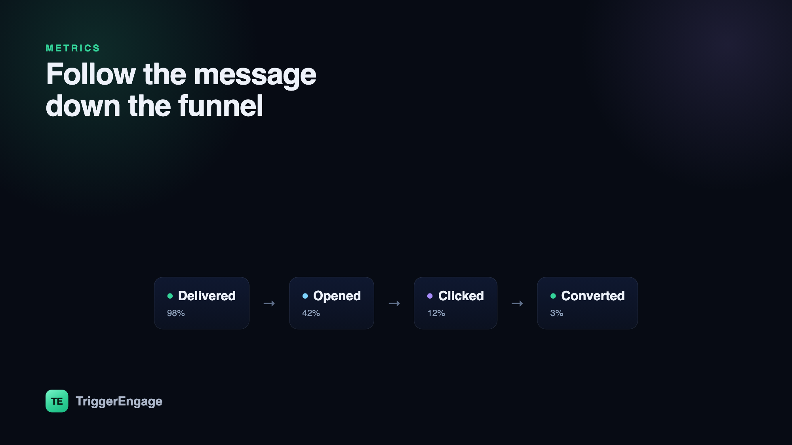

Most email dashboards lead with the wrong number. Open rate sits at the top in big, reassuring type — and it is now one of the least trustworthy signals you have. Meanwhile the metric that pays your bills, conversion, is often buried or missing entirely. Measuring email marketing metrics well is less about collecting more numbers and more about following one message down the funnel, from delivered to opened to clicked to converted, and knowing which step each number actually describes. Here is what to track, what to ignore, and how to tie it all back to revenue.

Think in a funnel, not a scoreboard
A single email moves people through a funnel, and each classic metric measures one stage of it: how many messages reached an inbox (delivered), how many were opened, how many earned a click, and how many produced the action you cared about (converted). Viewing them as a funnel rather than a row of disconnected stats changes what you learn. A healthy open rate with a dismal click rate points at a compelling subject line and a weak body. Strong clicks with poor conversion points at a landing page or offer problem, not an email problem. The drop-off between stages is where the diagnosis lives.
Deliverability: the metric under all the others
Every downstream number depends on the email actually reaching the inbox, which makes deliverability the quiet foundation of the whole funnel. Watch your delivery rate (accepted by the receiving server), your bounce rate (hard bounces signal bad addresses; a rising rate signals a list-hygiene problem), and above all your spam-complaint rate — even a small uptick can wreck your sender reputation and quietly suppress everything else. If your opens and clicks are sliding for no obvious reason, the cause is often here, upstream. Our deliverability guide covers the authentication and hygiene that keep this foundation solid.
Open rate: useful, but handle with care
Open rate used to be a decent proxy for "did the subject line work." It is now compromised. Mail privacy features pre-load tracking pixels on the recipient's behalf, registering opens whether or not a human ever looked. That inflates the number and, worse, distorts comparisons. Open rate still has a narrow use — directionally testing subject lines within the same audience and sending conditions — but it should never be your headline metric or the basis for a revenue claim.
Click-through and click-to-open: intent you can trust
A click is a deliberate act, which makes it far more honest than an open. Two versions are worth knowing. Click-through rate (CTR) is clicks divided by delivered — the share of your whole audience that engaged. Click-to-open rate (CTOR) is clicks divided by opens — how compelling the body was for the people who actually saw it. Because CTOR partly isolates the content from the subject line, it is a sharper read on whether your message and its call to action are doing their job. When you run an A/B test, clicks are usually a more reliable success metric than opens.
Conversion and revenue: the only metrics that pay
Everything above is a means to this end. Conversion rate is the share of recipients who took the action the email existed to drive — a purchase, a booking, a re-activation, an upgrade — and revenue per email (or per recipient) puts a currency figure on it. These are the numbers to optimize, because a campaign can win on opens and clicks and still lose on conversion if the offer or the landing experience falls down. Tie your email tracking through to the downstream event so you can attribute the outcome, not just the click.
Measure incremental lift with a holdout
Here is the discipline that separates real measurement from theater: hold out a control group that receives nothing, and compare. "We drove $80,000 from this flow" sounds impressive until you learn that a holdout who got no email converted almost as well — those were sales you would have made anyway. The honest number is the gap between the messaged group and the holdout: the email's true incremental contribution. Bake a small holdout into every important automated flow, from your win-back sequences to your promotions, and report the lift, not the gross total.
Retention and list-health metrics
A few longer-horizon numbers keep your program healthy rather than just busy. Unsubscribe rate and spam-complaint rate are your early-warning system for over-mailing — if they climb when you increase frequency, your audience is telling you something. List growth net of churn shows whether you are building an audience or just churning through one. And for automated programs, watch movement through your lifecycle stages — people flowing from onboarding to active, or out of an at-risk segment — which tells you the automation is doing its job, not just sending mail. Optimize for the durable relationship, not the next campaign's open rate.
| Metric | What it tells you | Trust level |
|---|---|---|
| Delivery / bounce | Are you reaching inboxes? | High |
| Open rate | Did the subject line land? (noisy) | Low |
| Click-through (CTR) | Did the audience engage? | High |
| Click-to-open (CTOR) | Did the body compel action? | High |
| Conversion / revenue | Did it produce the outcome? | Highest |
| Spam / unsubscribe | Are you over-mailing? | High |